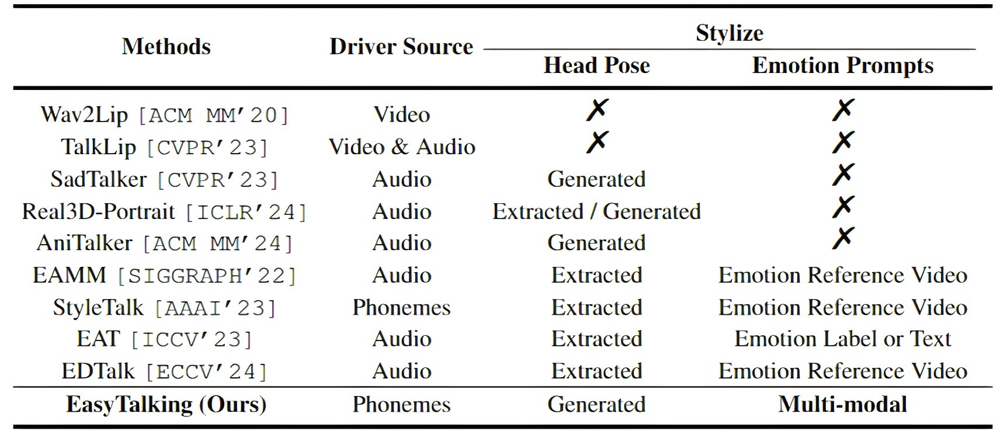

Audio-driven talking head video generation methods to be compared.
Speech-driven talking head generation aims at synthesizing realistic talking video according to a speech, where notable advancements have been achieved. However, expressing designated emotion in one-shot scenario is still challenging due to the confusion between expressions and personal appearance and the heterogeneity of modalities of the emotion prompts. To increases the effectiveness and accessibility of emotion control, we propose the EasyTalking, a two-stage generation framework which allows emotion prompts in modalities of image, text, or speech. We construct the EasyTalking from two main intuitions: first, to decouple the learning of facial dynamics from tones and appearances for more effective emotion control; second, to learn a modal-agnostic emotion space for allowing emotion prompts in diverse modalities. Specifically, we leverage phonemes as toneless inputs and project the emotion prompts into a modal-agnostic emotion space, which are used to guide the proposed Talking Diffusion Transformer to generate the appearance-agnostic motion representations. After that, we adapt the PIRender model with the fine-grained facial loss to render video frames from the motion representations. Through such way, we ensure the facial expression is controlled by the emotion prompt while achieve new state-of-the-art measured by lip-sync and realistic metrics.

We divide the generation into the Speech-to-Motion and Motion-to-Video stages. In the first stage, we propose a Talking Diffusion Transformer to predict representations of holistic facial and head motion from phonemes and emotion prompts. Then we propse a render model to render video frames according to the predicted motion representations and the identity-reference image.
Audio-driven talking head video generation methods to be compared.

Comparison with SOTAs on the MEAD dataset. The best results are bold and the second-best results are bracketed.
We conduct a user study with 30 users. We randomly select 10 speeches from the testing set: 5 for same-ID generation and the other 5 for cross-ID generation. Detailed setting is described in our supplement. We ask the users to separately identify the best anonymous models for each speech, according to lip synchronization, expression reality, and visual quality.
We should use technology responsibly and be careful about the synthesized content. There is a risk that EasyTalking could be misused. Thus, we will restrict the access to our code and pre-trained models when making the code public, likely by validating the institutional email. Furthermore, we also consider embedding visible or invisible digital watermarks in any generated content.
Please be aware that all videos on this page are algorithmically generated from publicly available sources and are intended solely for academic demonstrations and algorithm comparisons. Any other form of usage is prohibited. Besides, if required by the original image owner or in the case of misuse of the models, the images, models, and codes associated with this project may be removed at any time.